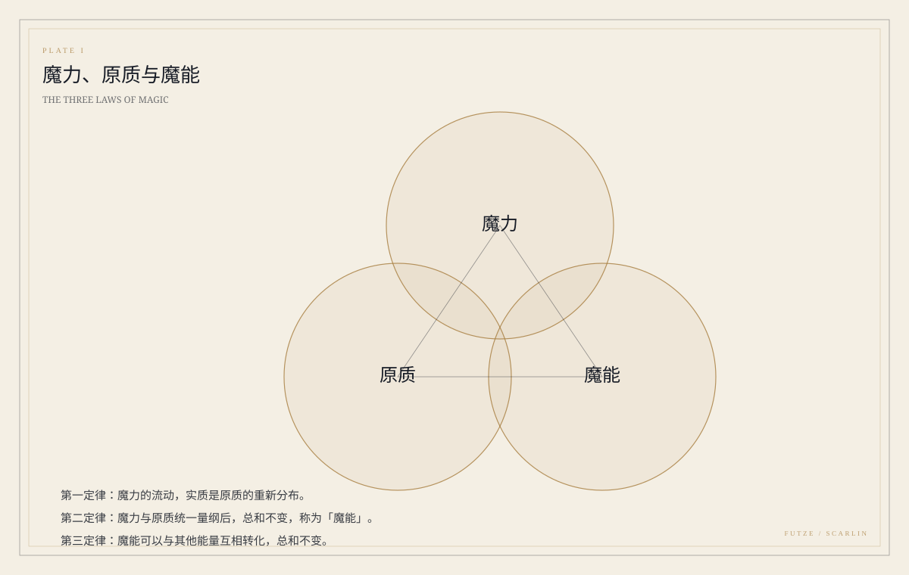
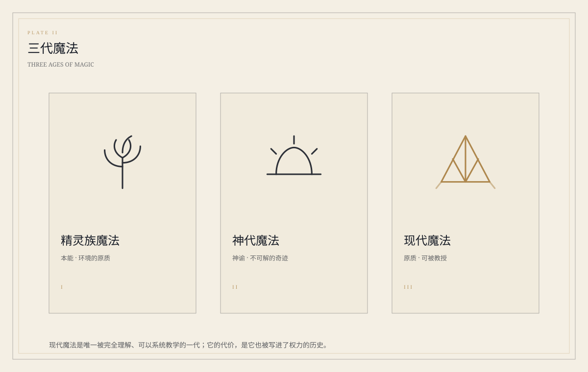

LAW I
魔力 · 原质统一定律
魔力的流动，实质是原质的重新分布。魔力不是一种「燃料」，而是原质在运动中的表现。
THE WORLD
先有物理，再有战争。魔力、原质与魔能的三条定律，决定了谁能施法、谁被禁止、谁被写进禁忌。
在这个世界里，魔力不是凭空出现的燃料。它是原质在运动中的表现；把魔力与原质统一量纲，得到「魔能」；魔能可以与其他能量互相转换，总和不变。

魔力的流动，实质是原质的重新分布。魔力不是一种「燃料」，而是原质在运动中的表现。
把魔力与原质统一量纲之后，二者的总和不变。这个总和被称为「魔能」。
魔能可以与其他形式的能量互相转换，转换前后总和不变。
人类、精灵、矮人、哥布林、魔物、魔种。前四个是「可以一起坐下来谈」的，后两个是「被写进史书另一栏」的。这个分栏本身就是战争留下的。
寿命短、欲望多、学得快。现代魔法诞生于人类，同盟战争也始于人类。
寿命可达千岁，尖耳，能直接使用自然中的原质。他们不需要「研究」魔法，只需要「听」。
约两百岁，饮圣水，善锻造魔器。身高与人类没有显著差异，固执与可靠也一样出名。
尖耳、绿宝石眼，学习力强，是大陆贸易与消息的桥梁。他们不被写进英雄史诗，但史诗里的每一把剑都要有人卖。
由高浓度原质进化而来。野生动物来源的魔物被称为魔兽；再往上，是更难命名的东西。
外观近人，约百岁，五百年前被封印。战后，他们的魔法被同盟列为禁忌。
四个组织，四种把世界组织起来的方式。
近一百个王国与城邦的联合协会，由人类、精灵、矮人三组代表共治。
魔王欧兰麾下的七个军团。七位领袖各有自己的位置。
七贤者建立的魔法之城。认证魔法使、炼金术师、神官与魔具使；也是新的勇者小队相遇的地方。
侍奉女神伊莲的教会。神官通过神代魔法传达神谕，却不知道神谕如何运作。
精灵族魔法、神代魔法、现代魔法。三代不是简单的替代关系：它们对「魔力从哪里来」给出了三种不同的回答。

本能。直接使用环境中的原质，不需要公式，也不需要学院。
神谕。神官与女神交流而发动，威力与原理都不在人的理解范围内。
原质。傅泽提出概念，斯卡琳归纳三定律；唯一被完全理解、可以系统教学的一代。
现代魔法是唯一完全掌握原理、可以系统教学的一代。它由傅泽提出原质概念，由他的学生斯卡琳归纳为三定律。
主线从格兰蒂亚出发，一路向北、向东、向更远的地方。每一座城都对应一种「人如何与魔力相处」的答案。
魔法之城，学会与学院所在地。白色的塔、石板的街、永远有人在讨论魔法。
主角团离开格兰蒂亚后的第一站。欧瑟希在这里加入。
伊芙格林守了很久的森林。树会记得人，风会记得曲子。
莫伊卡在这里加入小队。名字待定，但那里是一个以黄金为食粮的城市。
罗耶的故乡。名字待定。
米莉卡与主角团相遇的地方，名字待定。断断续续的梦，从这里开始。
许德拉与蛇族庄园的遗址。贤者之石在这里被夺走，记忆在这里被交换。
传说中「镜之恶魔」的封印所在地。赫琉思为了得知五百年前的真相在这里打开了封印。
史书略过的地方。诺维安想去的，就是这些地方。
地名表只列主线与设定中已确定的地点，还有其余未补完。